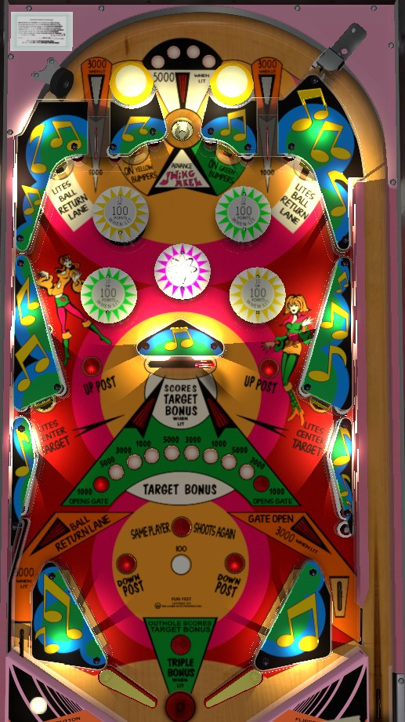

Fun Fest is the 4 player version. Swinger is the otherwise-identical 2 player version.
The top center saucer is lit for 5,000 points on every 5th 10-point switch hit, and the top lanes are lit for 3,000 on every 2nd 10-point switch hit; use the 10-point passive bumpers at the top of the table to ensure you get one of these as your skill shot. Upper side standup targets qualify the left kickback; lower side standup targets light the center swinging target, which locks in the value and qualifies it for collection.
The center top saucer scores 500 points, or 5,000 when lit orange. Every time a 10-point switch is triggered, the white light above the saucer will move to the right; every 5th 10-point switch, lights the saucer with the orange arrow. Making the saucer adds one to the Swing Reel; advancing the Swing Reel to 5 awards an extra ball, and advancing the Swing Reel to 8 awards a special.
The top lanes score 1,000 points, or 3,000 when lit. Either both lanes are lit, or both are unlit; every 10-point switch toggles whether the lanes are lit or not.
Yellow and green bumpers score 10 points, or 100 when lit. The purple bumper is always lit and always scores 100 points. The standup targets above the bumpers near the center of the table light the yellow (left) and green (right) bumpers.
The Swinging Target in the center of the table bops back and forth on its own. Every time it reaches the far left of its swinging arc, the displayed target award moves right one position. Target awards can be 1,000 points, 1,000 points and open right gate, 3,000 points, or 5,000 points. If the swinging target is not lit, it scores only 100 points. Hit either the lower left or lower right standup target to light the swinging target, which also prevents the swinging target value from changing. Hit the swinging target when lit to score the currently lit target award.
When the ball drains, the current Target Award is scored automatically. On the final ball of the game, this automatic Target Award is tripled.
There are no in lanes. Flippers back up directly to the slingshots. Full size three inch flippers are used. Out lanes score 1,000 points, or 3,000 when lit. The left out lane is lit by hitting either the upper left or upper right standup targets, which also enable a one-use automatic kickback that returns a left out lane ball to play. The right out lane has a gate that redirects the ball back to the shooter lane; it is opened as a Target Award and closes once used or once the ball drains. There is also a center post between the flippers that is raised by the Up Post buttons on either side of the swinging target, and lowered by the Down Post buttons near the slingshots; this post completely blocks the center drain while it is raised.
There is no end of ball bonus, and I do not know of any settings that allow specials or extra balls to take a point value in competition/novelty play.